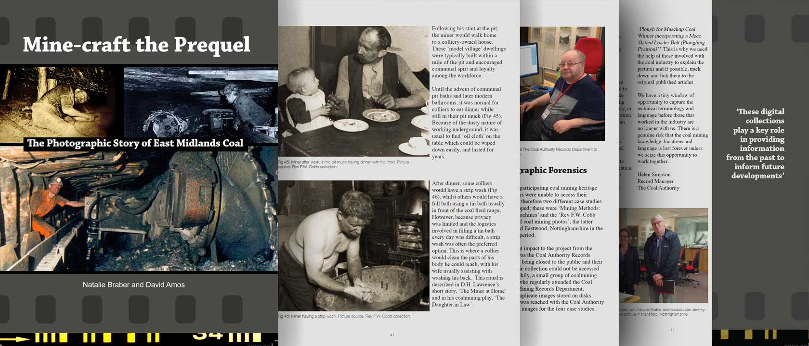
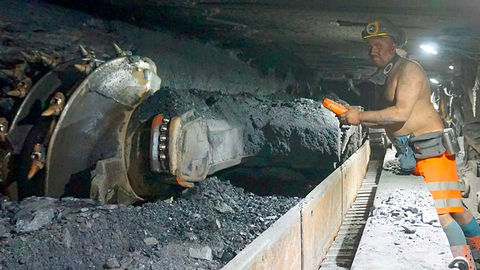
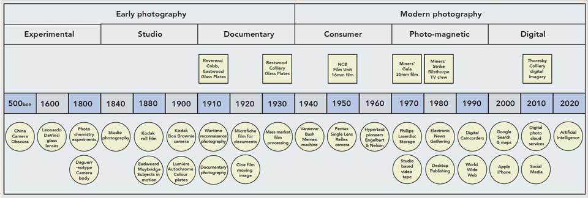
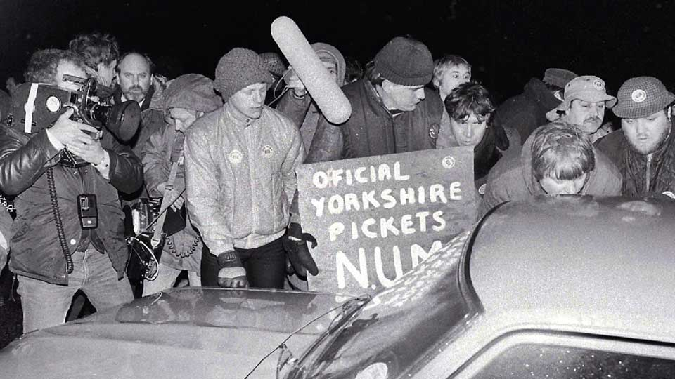
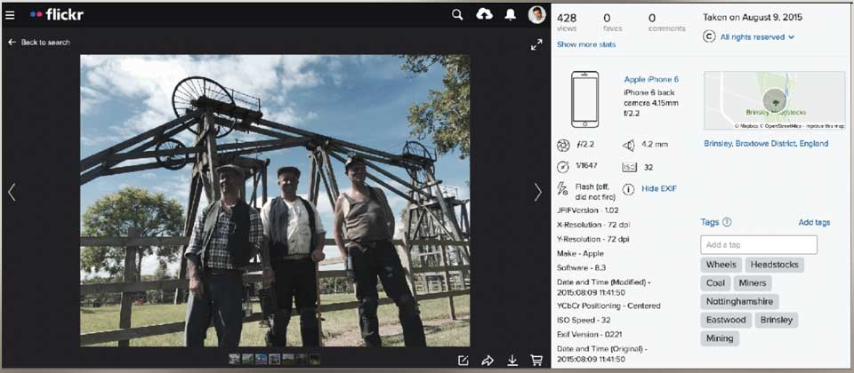
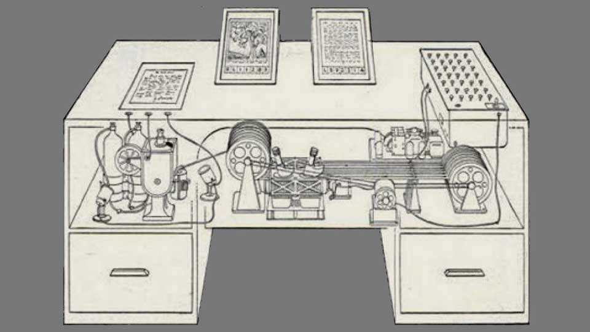
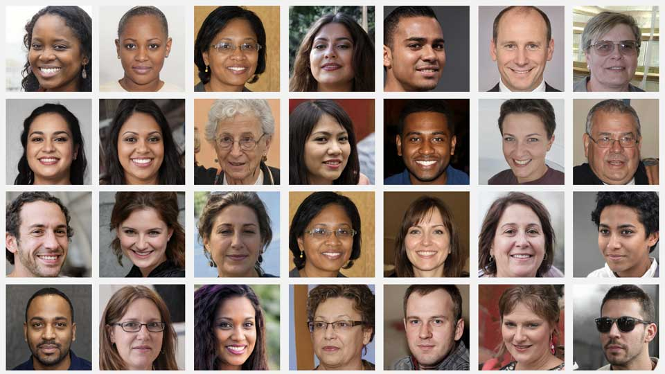

Plate to Pixel: The infinite shoebox
Feature - Paul Fillingham, November 2022
From magic lantern shows of D.H. Lawrence's birthplace to social media images depicting the last days at Thoresby Colliery - Mine-craft the Prequel features a selection of rare and outstanding photographs, spanning over one hundred years of east Midlands coal mining history. With exclusive access to The Coal Authority archive of some 47,000 digital images, the project dispenses with nostalgic iconography, and presents a realistic account of an increasingly mechanised industry, told through the lens of successive photographic technologies.
Compiled by historian David Amos and linguist Natalie Braber with contributions from archivist Helen Simpson and digital consultant Paul Fillingham, the publication was inspired by a Nottingham Trent University outreach project - capturing eyewitness accounts from former mineworkers to enhance the descriptions (metadata) of photographs stored in The Coal Authority media archive. Published by Thinkamigo Editions to accompany a photographic exhibition at the D.H. Lawrence Birthplace Museum, the book is divided into several themes and case studies.

The following excerpt explores the development of imaging technology from the very earliest plate cameras through to mobile phones, and considers the challenges presented by social media and artificial intelligence (AI).
Today, people all over the world use pocket-sized devices (smart phones rather than cameras) to capture images. Fueled by social media, the act of sharing pictures has become a defining feature of our age. Collectively, we create and consume billions of images every day.
Professional photography began over two hundred years ago, its evolution shaped by scientific advances in metals, glass, chemicals, magnetic media, and the microchip. Once the poor relation to professional cameras and film, digital imaging has since out-performed its analogue parent through improved file compression, picture-definition, accessibility, and ease-of-use.
In the early days of the internet, it was thought the web would collapse under increased demand for high-quality images and other rich media (audio and video). Moore's Law - first postulated in 1965 and revised in 1975 - was a benchmark for technological development, stating that computing power doubles every two years inversely proportional to falling production costs. Memory capacity, improved sensors and even the number and size of pixels in digital cameras and screens are strongly linked to Moore's Law. The web did not collapse as feared - but the amount of processing power required to feed the world's appetite for video and images is simply mind-boggling.
Only a few decades ago, photography was expensive and technically demanding - more so for the pioneering documentary photographers who chose to work in the hazardous, low-light conditions afforded by coal mines and industrial sites at the beginning of the 20th century. These barriers to entry mean that good quality images from the past possess a rarity that makes them very special.
Browsing, selecting and annotating pictures on a mobile device is fundamentally the same activity as sorting through family photographs stored in a shoebox. Anyone who has experienced viewing cherished photos with older family members will appreciate the sense of wonder as they recall stories and anecdotes. For historians, capturing this layer of information (metadata) is an essential part of understanding what is represented in an image.

Whilst digital images are abundant and technically superior to old family snapshots, they do present historians with a unique set of challenges - the modern-day shoebox is not owned by grandma - but is typically hosted by technology giants such as Google (Alphabet), Facebook (Meta), and Apple. The data privacy and retention policies of these global corporations do not readily facilitate handing-down family photos from one generation to another. And in certain circumstances, moderators at these organisations - humans and computer algorithms - are permitted to exercise editorial control and may even delete images altogether. This may seem dystopian, but the influence of proprietary technology is nothing new. Companies like Kodak, Agfa, JVC, Philips, and Sony have all at one time or another influenced the capture, processing, storage and distribution methods available to the humble photographer.
Technological innovation continues to shape the way we see the world. The transition from glass plate to black and white film at the start of the 20th century, and the availability of affordable colour film after World War II, offer forensic clues about the origin of an image.
At the time of the pit closures in the 1980s, photo-chemical processing was already being replaced by magnetic media, giving rise to a generation of reusable video formats and laying the groundwork for image capture, storage and transfer using digital devices. Coal mining history has been preserved using many types of photographic media and technology, each one purporting to be more robust than the last. Irrespective of the type of media used, the photographers of the time likely believed they were capturing images for posterity - when in fact, film fades when exposed to light, videotapes oxidise, and digital media can be adversely affected by strong magnetic fields or even corrupted by computer virus.
All photographic formats reach a point of obsolescence, when it becomes difficult to view the content in the way it was originally intended.
To mitigate the loss of historic images, organisations like the Movie Archive for Central England (MACE) and the British Film Institute (BFI) continue to preserve film and video content.

The formation of the National Coal Board (NCB) in 1946 resulted in the creation of one of Britain's most prolific industrial film units. The NCB Film Unit's Mining Review newsreels were screened in picture houses all over the country, many located in the mining communities where the films were made. In addition to documenting underground working practices, the unit also captured the lives of mining families above ground. This unique record of mining community life, spanning the years 1948 to 1983, is archived by the BFI and publicly available online.
The sheer volume of digital images that we now generate is so huge, one would imagine that managing this infinite shoebox would be near impossible. However, smartphone cameras gather vast amounts of metadata by stealth, including the details of when and where images are created (geo-tagging). This additional layer of information - known as Exchangeable Image File (EXIF) data - can be read with appropriate software even after an image has been edited.

In the past, the indexing of analogue images was rarely so thorough. For analogue images, we rely upon the skill of historians to determine the time and location of an image by examining the objects depicted within it. Eyewitness accounts and subject matter experts provide context and detail that is not readily apparent in an image, but the opportunity for capturing living memory is steadily decreasing, and the stories of our former industrial workforce will soon be lost forever.
The importance of attaching metadata to documents, photographs and diagrams was recognised by Vannevar Bush, who served as chief science advisor to the US President during World War II.

In his essay As We May Think (The Atlantic, 1945), Bush describes a desktop memory machine he called the Memex - incorporating microfiche film-scanning, document notation, sorting and retrieval.
Internet pioneers Doug Engelbart - credited with developing the graphical user interface in 1962 and inventing the computer mouse in 1963 - and Ted Nelson, who coined the phrase hypertext in 1965, were both influenced by Bush's ideas and made efforts to include metadata as a foundation of the World Wide Web. However, when the web launched in 1994, the semantic structure of its web pages - written in Hyper-Text Markup Language (HTML) - did not follow any strict protocol for representing metadata. Meaningful image descriptions on the web have therefore remained incomplete and elusive for nearly three decades. Even though there is currently no single agreed structure for representing metadata on the web, several emerging standards seek to resolve the issue of cataloguing content. The web's dominant search engine, Google, encourages content creators to publish more accurate metadata by rewarding them with better visibility in search results. Search engine optimisation (SEO) experts devote much of their time to improving web page text density and relevancy of commercial websites in order to maintain a competitive advantage.
For many years Google could only read text when indexing a web page. Indexing images relied on programmers adding a short image description to their HTML code. This tagging method (alt-tags) was sometimes abused by users who would add irrelevant keywords in order to skew Google search results to their advantage - a practice known as keyword stuffing. Whilst alt-tags are still an important form of metadata, Google has since developed AI that can see, identify, and group image details into meaningful categories. Automatically curated digital photo albums are a popular feature of commercial services by Apple and Google that make use of this technology.
Another form of metadata used by Google is the Open Graph (OG) protocol - a web standard that facilitates the like button on social media feeds. With the necessary OG metadata in place, sharing a photograph from a website to Twitter or Facebook, for example, allows the social media post to be automatically populated with descriptions and keywords in one click, ensuring consistency and helping to maintain a single source of truth with little effort required by the user.
The quest for a common metadata standard has been ongoing for several decades. One such initiative is the Dublin Core Metadata Element Set, which originated from a knowledge transfer conference in Dublin, Ohio in 1995. Dublin Core seeks to describe content using fifteen parameters that are broad, generic, and suitable for describing a wide range of resources and content. Dublin Core contains all of the necessary attributes for indexing media resources such as sounds and images but ultimately is dependent upon reliable information being recorded by the content creator.
Dublin Core Metadata Element Set
- Title - a name given to the resource.
- Subject - the topic of the resource.
- Description - an account of the resource.
- Creator - an entity primarily responsible for making the resource.
- Publisher - an entity responsible for making the resource available.
- Contributor - an entity responsible for making contributions to the resource.
- Date - a point or period of time associated with an event in the lifecycle of the resource.
- Type - the nature or genre of the resource.
- Format - the file format, physical medium, or dimensions of the resource.
- Identifier - an unambiguous reference to the resource within a given context.
- Source - a related resource from which the described resource is derived.
- Language - a language of the resource.
- Relation - a related resource.
- Coverage - the spatial or temporal topic of the resource, the spatial applicability of the resource, or the jurisdiction under which the resource is relevant.
- Rights - information about rights held in and over the resource.
The much-quoted maxim the photo never lies has always been open to challenge. Photo-manipulation has a long history, from the hand-tinted postcards of yesteryear to modern day image retouching afforded by tools like Adobe Photoshop (1989) and mobile apps like Instagram (2010). Though perceived as enhancements, the removal of unwanted details and artefacts - adjusting the position of an object, repairing damage to physical media, or compensating for poor exposure - can frustrate the efforts of historians by altering the original content. In recent years AI has raised the bar on what we consider to be an authentic image, enabling the creation of so-called deep fake images and even video that is indistinguishable from reality.
One such technology, developed by microchip manufacturer Nvidia, is the Generative Adversarial Network (GAN), which blends photographic details from multiple sources to create hyper-realistic images. Nvidia's experimental website thispersondoesnotexist.com demonstrates this technique by generating pictures of human faces based on analysis of thousands of portraits shared on the photo-sharing platform Flickr.
Artificial intelligence has raised the bar on what we consider to be an authentic image.
Originally developed to facilitate applications involving biometric scanning and facial recognition, GAN applications can also simulate the appearance of landscape features and man-made objects. AI imaging is so pervasive that it is now used to improve the quality of mobile snapshots. The skills of the photographer are not only built into the mobile phone - we have reached the stage where the device can automatically fill in missing details or remove unwanted artefacts on the fly.

In the creative arts, pioneers like Mario Klingemann, Amir Zhussupov, and Anna Ridler are harnessing GAN to create completely immersive artworks that seem strangely familiar even though they are artificial.
As the boundaries between what is real and what is manufactured become increasingly blurred, metadata adds a degree of provenance to archives and knowledge exchange. Metadata describes the essential attributes of an image - its origin, subject-matter, history and ownership - and makes this accessible to future generations.